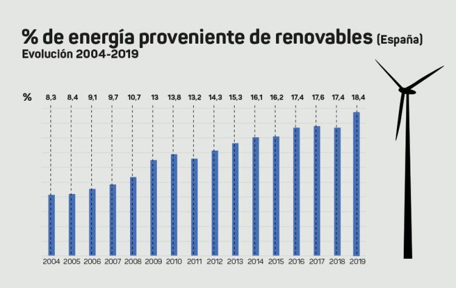

Por que son importantes
Las energías ventajas de las energias renovables son:
- Al no producir gases de efecto invernadero (GEI) no contribuyen al calentamiento global y por eso es el origen para la reducción del CO2.
- Además ayudan a garantizar un buen futuro a las nuevas generaciones
- Son una fuente inagotable de energía
La importancia de las energías renovables permiten visualizar cuáles son las ventajas de gozar de las mismas y desarrollarlas
eficientemente. Tanto para la sociedad como para el planeta son un factor determinante para obtener mejores condiciones sanitarias
y ambientales.
El crecimiento de las energías renovables es imparable, como queda reflejado en las estadísticas aportadas anualmente por la Agencia
Internacional de la Energía (AIE): Según las previsiones de la AIE, la participación de las renovables en el suministro eléctrico global pasará
del 26% en 2018 al 44% en 2040, y proporcionarán 2/3 del incremento de demanda eléctrica registrado en ese período, principalmente a través de
las tecnologías eólica y fotovoltaica.
